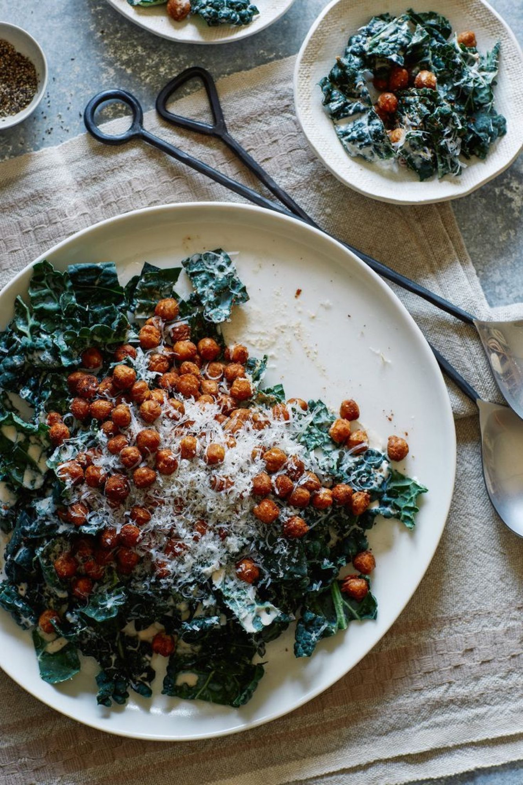

Roasted Chickpea and Kale Salad with a Creamy Tahini + Yoghurt Dressing

Before you start heat the oven to 190°C. Needs about 1 hour refrigerating.
Ingredients
Creamy tahini and yoghurt dressing
Roasted chickpeas
To serve
Method
- Place all dressing ingredients into a blender and blend until smooth and desired consistency has been achieved.
- Pour dressing into a large mixing bowl, top with the 1 bunch of kale and toss together until kale leaves are fully coated. Refrigerate for about 1 hour.
- Preheat oven to 190°C.
- Place all chickpea ingredients into another mixing bowl and toss together until completely combined. Pour mixture onto a baking sheet lined with parchment and roast for about 15 minutes. Toss mixture together with a wooden spoon and continue to roast chickpeas for about 10 minutes. Remove from heat.
- Pour the chickpeas over the dressed kale and finish with the ricotta salata or Parmesan. Serve.